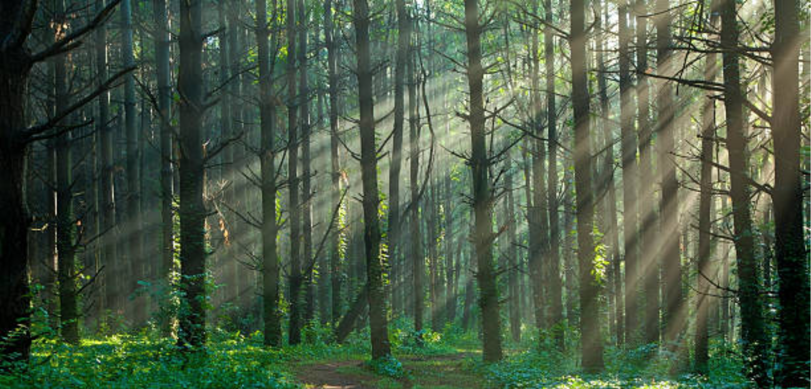
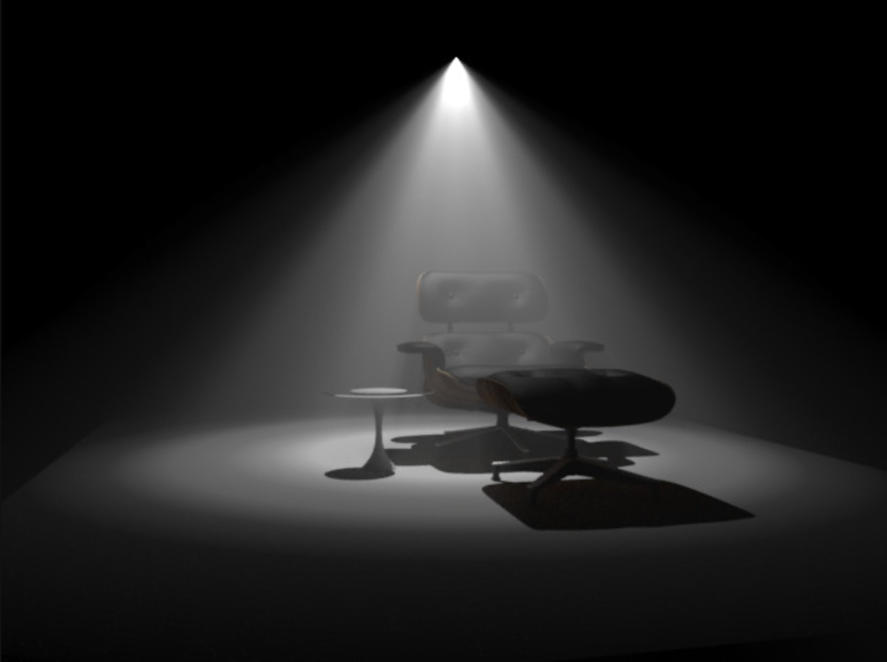
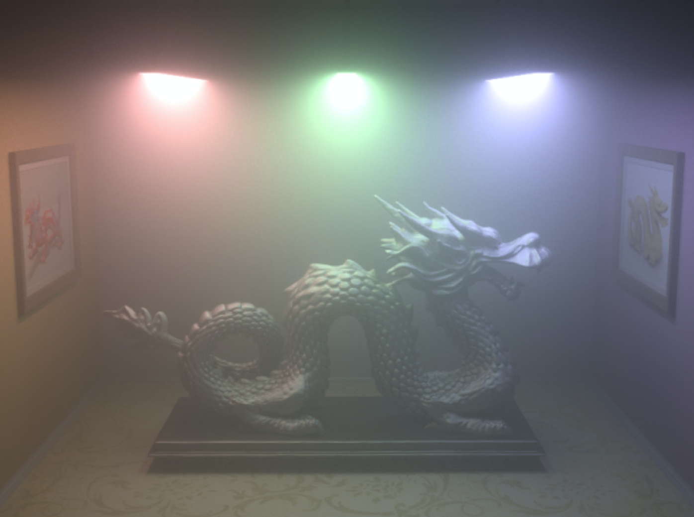

In this project, we are going to implement an algorithm that takes into account the media of light transmission when doing ray tracing. Volume is used to extend the algorithm to non-homogeneous media and four effects of media are taken into account: absorption, emission, in-scattering and out-scattering. With the help of the volumetric scattering algorithm, we can render the scene that contains fog, smoke or fire.
|

|
We have implemented surface rendering in project 3, which assumes that the radiance remains constant until it hits a surface. However, it is not 100% realistic because the space between objects in the real world is occupied by some medium such as air, fog, and water. Surface rendering is not sufficient when the effect of media cannot be ignored. Especially when rendering scenes that contain fog, cloud, smoke or fire. Therefore, taking into account medium when casting rays in the ray tracing algorithm is necessary to render more realistic images. Here the volumetric scattering algorithm comes.
The basic idea of the volumetric scattering algorithm is simulating the medium by microparticles that would cause absorption, emission, in-scattering and out-scattering of light. Absorption, emission and out-scattering is straightforward and not problematic. However, the biggest challenge is the in-scattering effect, whose computation cost is heavy because it requires integral over all surfaces in the scene. To accelerate it, extending this algorithm from CPU to GPU is a possible effective way.
Another problem is that the medium is not homogenous throughout the whole space. This problem can be solved by discretizing the medium into volume elements. Each volume has its own parameters that define the scattering characteristics of the volume. In this way, the medium can be divided into many volumes and each volume is approximated as homogeneous. The handling of non-homogeneous media thus becomes similar to the handling of homogeneous media.
We will start with the scenes used in project 3 with a single light source on top of the scene. Then we will try more complicated scenes with multiple light sources and probably with multiple colors. We will also compare results among images rendered with the same scene but with different parameter settings.
|

|

|
We will use the same code base as project 3. Thus we will continue using GUI for our project. Most of the features and command options will be preserved and we will also add more command options to allow users to alter each parameter. We will use a video demo for presentation, which will briefly introduce our algorithm and present the final rendered images. If time allows, we are also considering using video to demonstrate real-time volumetric scattering.
Firstly, our rendered images with the scattering effect should be realistic. It should look just like the fog effect. For light sources like spotlight, the light beam should be clearly seen in the rendered images. Also, we should consider the level of noise in the rendered images. It might be difficult to tell whether some spots are due to scattering effect or noise. This can be tested with designed light sources and designed scene structure. We are expecting the rendering speed using the CPU to be quite slow which is not able to support real-time rendering. If time permits, we will implement this on GPU to achieve real-time rendering.
We are going to analyze the difference between normal surface rendering and rendering with volumetric scattering, since the effects are distinctive: normal surface rendering would generate sharp images same as project 3, while rendering with volumetric scattering has fog effects. Therefore, after comparison, we will visualize the different effects.
We will try to render images by adjusting some parameters like absorption rate, Henyey-Greenstein phase function and scattering sampling frequency. The corresponding result images will be compared to analyze the quality and expected effects of rendered images. Furthermore, since we are going to calculate the integral of all the surface and all the volume in the scene, estimation of the integral would be measured by summation which involve the accuracy problem, so that we will find the algorithm with the best estimation and result.
Plan to deliver:
Hope to achieve
Light Transport in Participating Media
Rendering Participating Media with Bidirectional Path Tracing